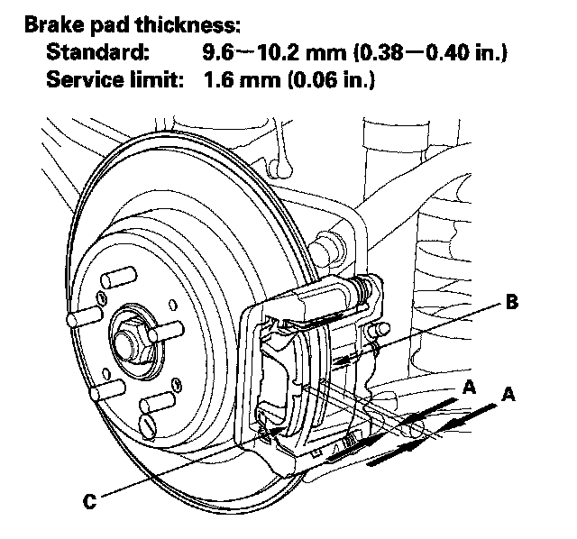

Rear
Rear Brake Pad Inspection and ReplacementSpecial Tools Required
Brake caliper piston compressor 07AAE-SEPA101
CAUTION: Frequent inhalation of brake pad dust, regardless of material composition, could be hazardous to your health.
^ Avoid breathing dust particles.
^ Never use an air hose or brush to clean brake assemblies. Use an OSHA-approved vacuum cleaner.
Inspection
1. Raise the rear of the vehicle, and support it with safety stands in the proper locations.
2. Remove the rear wheels.
3. Check the thickness (A) of the inner pad (B) and outer pad (C). Do not include the thickness of the backing plate.

4. If the brake pad thickness is less than the service limit, replace the rear brake pads as a set.
5. Clean the mating surface of the brake disc/drum and the inside of the wheel, then install the rear wheels.